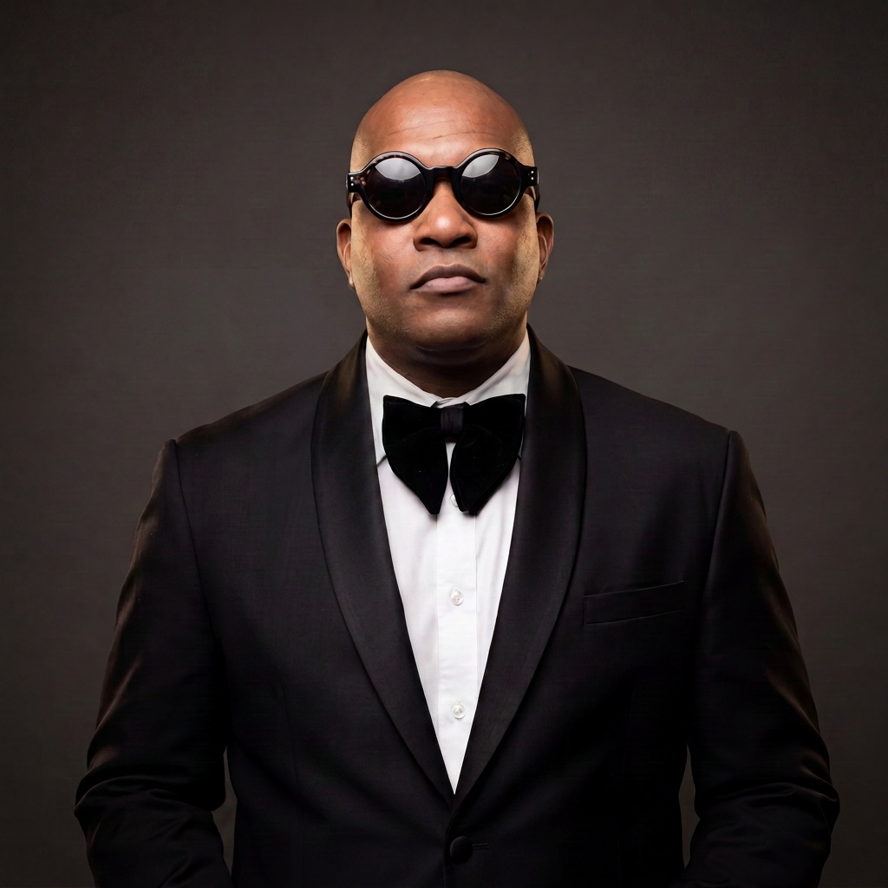

Debut album · 2026
the story
Jazz, hip-hop, and
all-around dope shit.
Not a background musician. Not a jazz purist. Harvey Cummings II is a saxophonist, pianist, producer, composer, educator and cultural curator whose work lives where music, storytelling, culture and unforgettable live experiences meet.
-
01
Roots
Charlotte born, North Carolina Central raised. His debut Chicken Day EP takes its name from the weekly cafeteria ritual that turned an HBCU campus into a congregation — a record about where he's from and who raised him.
-
02
Range
Keys and saxophone alongside 9th Wonder for Cartoon Network's The Boondocks. Stages shared with Anthony Hamilton, Angie Stone, Giveon, TLC and Fantasia. A performance for President Barack Obama. Programming for the Carolina Panthers and Super Bowl weekend.
-
03
Language
Gospel discipline, bebop grit, hip-hop energy — tradition spoken with a modern accent. Music that moves from a hymn to a street anthem without dropping a beat, built to bring a younger and wider audience into the room.